Wales's oldest football club — from the founding fathers of the game, to the very bottom of the pyramid, to the edge of a stage it has never once stood on.
1864Founded
87Yrs in the Football League
15Yrs lost to non-league
3Straight promotions
The Rise, the Fall, the Rise
Founded on 4 October 1864 by members of Wrexham Cricket Club, Wrexham AFC is the oldest football club in Wales and one of the oldest professional clubs anywhere in the world. It joined the Football League in 1921 and stayed there for 87 unbroken years. Then it fell — all the way out of the league in 2008 — and spent fifteen seasons in the non-league wilderness before a rescue that turned into one of the great modern football stories.
League tier by era (schematic, not to linear scale). Solid gold = the current climb; dotted = the promotion that has never happened.
The Rescue, and the Rise
In February 2021, actors Rob McElhenney and Ryan Reynolds completed a takeover of Wrexham — then a fifth-tier club — backed by more than 98% of the Wrexham Supporters Trust. The Welcome to Wrexham documentary turned a local institution into a global story, and the football caught up fast.
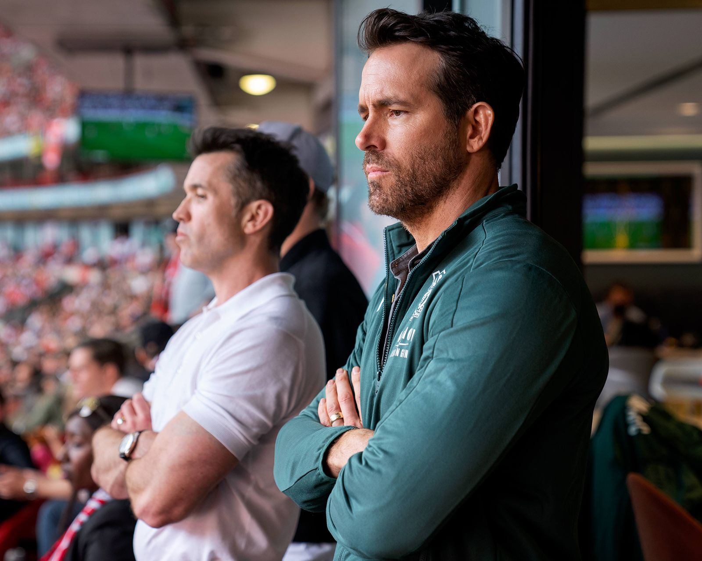
Rob McElhenney and Ryan Reynolds at the Racecourse — owners since February 2021.
2022–23: National League champions with a record 111 points, 34 wins and 115 goals — ending the 15-year exile. 2023–24: promoted again out of League Two. 2024–25: promoted from League One to reach the Championship — making Wrexham the first club to win three straight promotions across the top five tiers of English football.
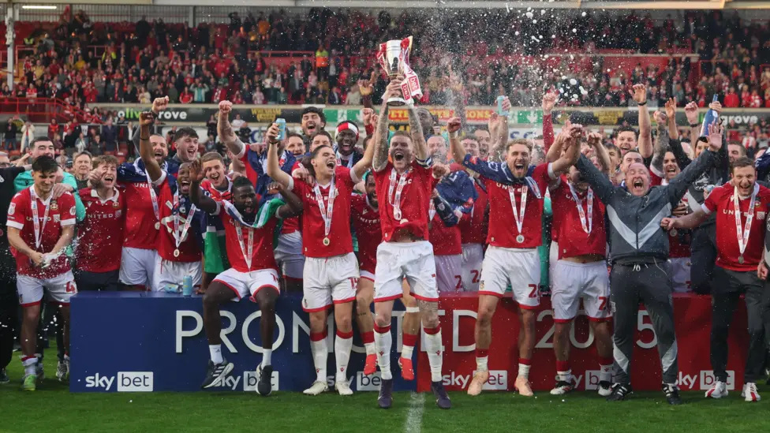
The trophy lift — promotion secured.
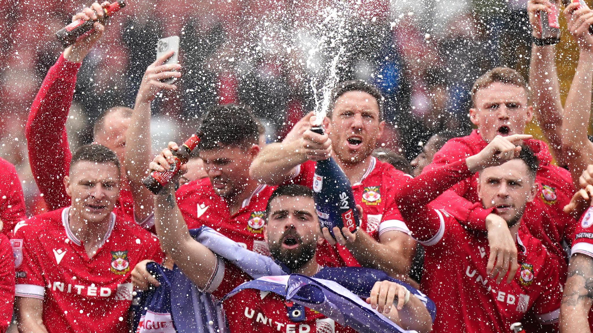
Three seasons, three promotions — back to back to back.
The Ceiling It Never Broke
Here is the fact that frames everything about this season: Wrexham has never played in the top flight of English football. Not once in over 160 years. The club's previous high-water mark was the old Second Division (the second tier), reached in 1978 and held for just four seasons until relegation in 1982. Promotion in 2024–25 returned Wrexham to the second tier — now the EFL Championship — for the first time in 43 years.
Which means the Premier League would not be a return. It would be uncharted ground — the highest the club has ever climbed, in the whole of its history.
A club can be 161 years old and still have a first waiting for it.
— The one line that explains this season
The Racecourse
Wrexham have played at the Racecourse Ground — now STōK Cae Ras ("Cae Ras" is Welsh for "Racecourse") — since 1864. Guinness World Records recognises it as the oldest international football stadium still hosting internationals: Wales played their first home international here on 5 March 1877. The record crowd, 34,445, packed in to watch an FA Cup tie against Manchester United on 26 January 1957. A new Kop stand, designed by Populous, is under construction — a statement of where the club now believes it is going.
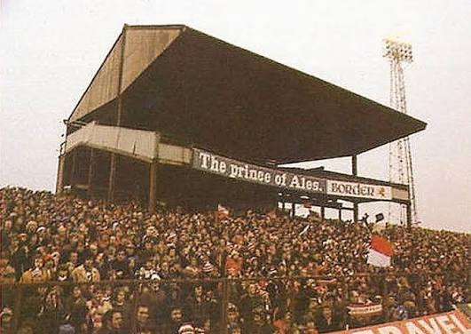
Then
The old Kop — terraced, roofed, and roaring.
Now
The ground today, the club's name spelled out in the stand.
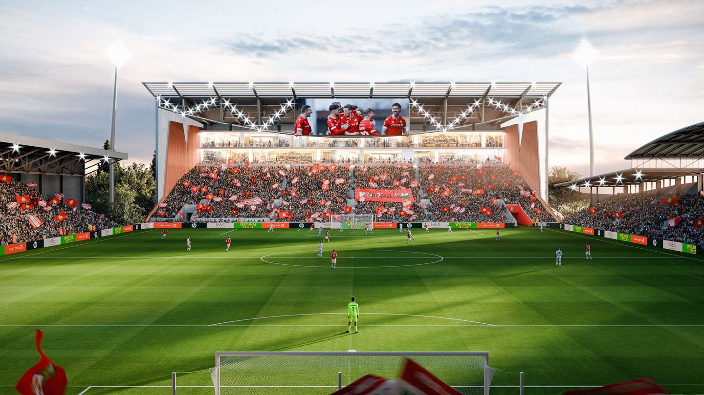
Next
Artist's impression of the redeveloped Kop and stadium.
The Town That Became a City
Wrexham is the largest settlement in North Wales, an old industrial town built on coal, iron, leather and beer — the Wrexham Lager Brewery (1882) is cited as the first lager brewery in Britain. In 2022, as part of Queen Elizabeth II's Platinum Jubilee honours, the town was granted city status, becoming Wales's seventh city. The football club is stitched into that civic identity: when the world discovered Wrexham through the Welcome to Wrexham documentary, it discovered the place as much as the team.
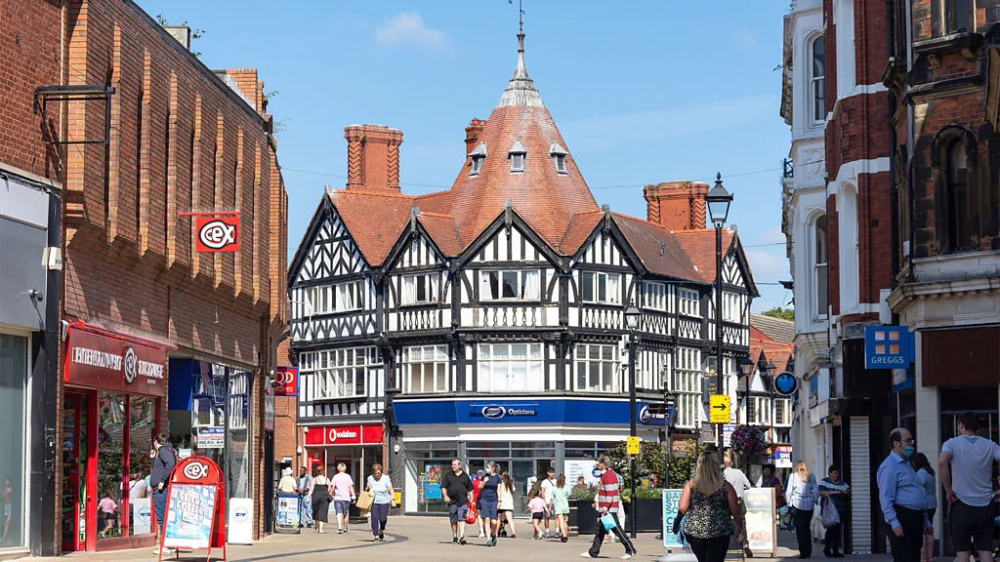
The town centre — half-timbered landmarks on the high street.
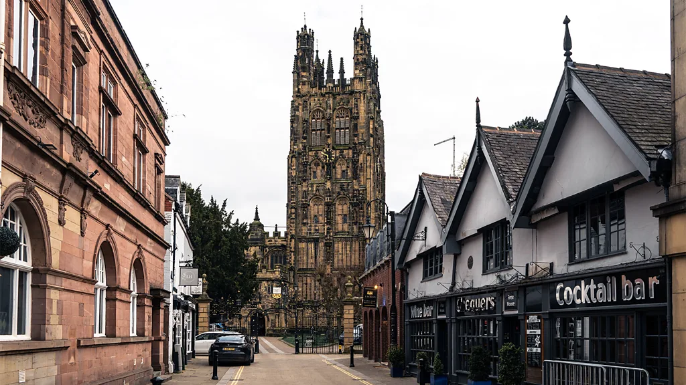
St Giles' Church tower — one of the Seven Wonders of Wales.
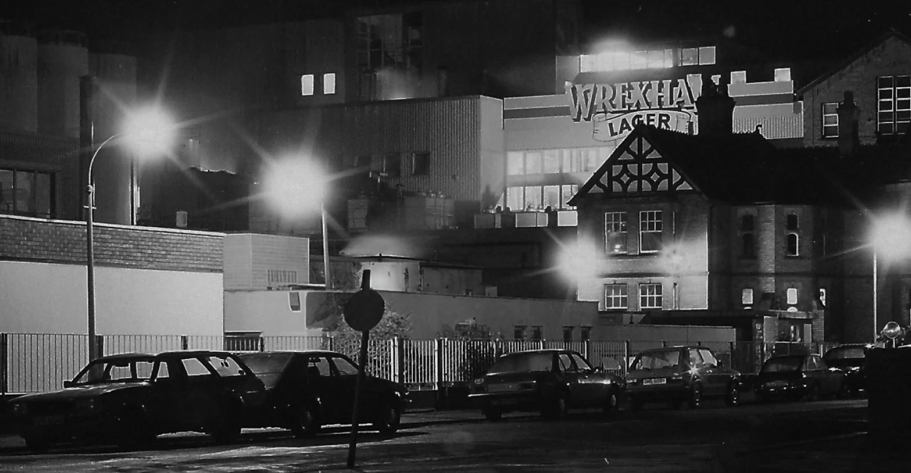
Wrexham Lager — brewing in the town since 1882.
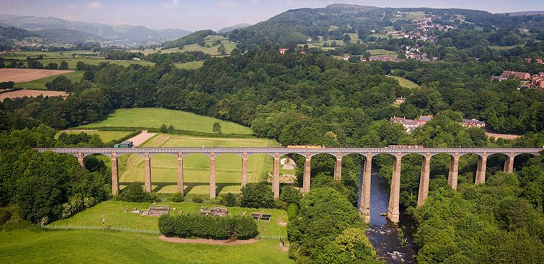
Pontcysyllte Aqueduct — the county's UNESCO World Heritage landmark.
Cup Nights
Wrexham's furthest FA Cup runs both ended in the quarter-finals — in 1974 and again in 1997. But the tie everyone remembers is smaller and louder than either.
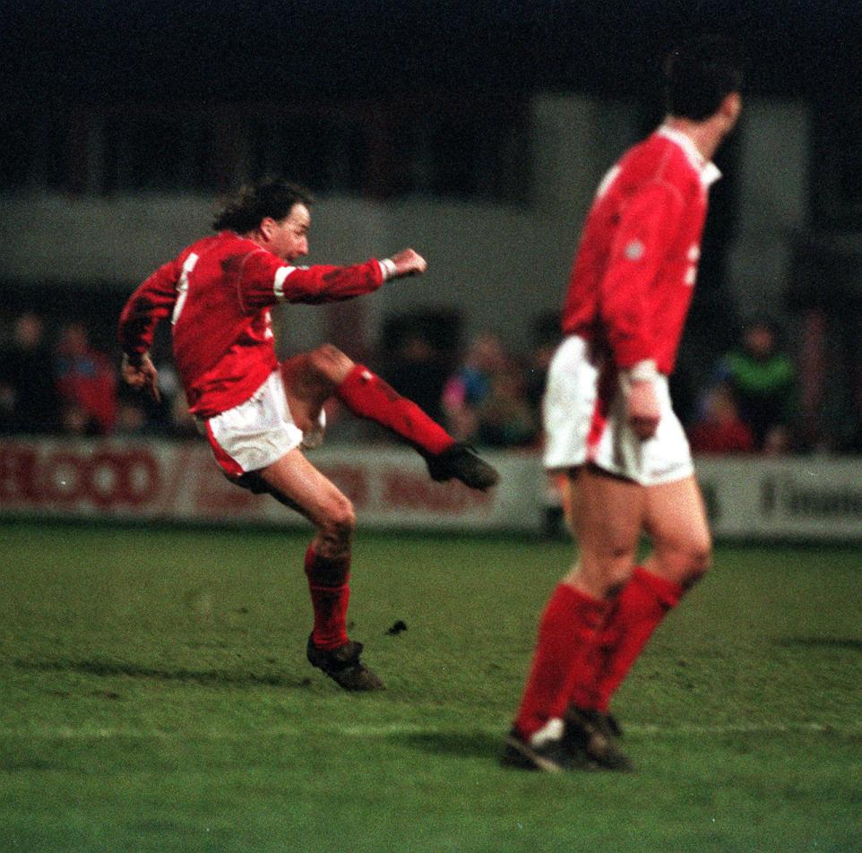
4 January 1992 — Mickey Thomas's free kick against Arsenal, one of the FA Cup's greatest shocks.
On 4 January 1992, Wrexham — who had finished bottom of the entire Football League the season before — hosted Arsenal, the reigning First Division champions. Trailing 1–0 with eight minutes left, Mickey Thomas curled in a trademark free kick, and Steve Watkin bundled the winner moments later. Wrexham 2, Arsenal 1 — the giant-killing that still defines the club's cup folklore.
Records & Honours
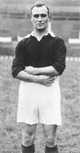
Tommy Bamford — 201 goals, still the club's all-time top scorer nine decades on.
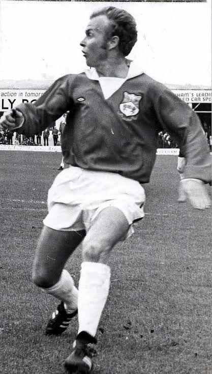
Arfon Griffiths — 592 league appearances, “Mr Wrexham” and later a title-winning manager.
All-time top scorer · Tommy Bamford (1928–34)201 goals
Most goals in a season · Tommy Bamford, 1933–3451 goals
Most appearances · Arfon Griffiths (league)592
Record league points · 2022–23 (a Football League record)111
Record attendance · v Manchester United, 195734,445
Record win · v Hartlepools United, 196210–1
Record defeat · v Brentford, 19630–9
Welsh Cup wins · a competition record23
Record fee received · Bryan Hughes to Birmingham, 1997£0.8m
Record fee paid · Nathan Broadhead from Ipswich, 2025£10m
Best in Europe · Cup Winners' Cup quarter-finals1976
Bamford's all-time tally is listed as 201 (some club-archive sources cite more across all competitions). Fee and European figures per public records.
Roll of Honour
League
National League · Champions (record 111 pts)2022–23
EFL League One · Promoted (runners-up)2024–25
EFL League Two · Promoted (runners-up)2023–24
Third Division · Champions1977–78
Third Division North · Runners-up1932–33
Cups
Welsh Cup · Winners — a competition record×23
FAW Premier Cup · Winners — a record×5
Football League Trophy · Winners (v Southend)2004–05
FA Trophy · Winners (v Grimsby)2012–13
Europe
Cup Winners' Cup · Quarter-finals (beat FC Porto en route)1975–76
European qualifications · via the Welsh Cupmultiple
The All-Time XI
A greatest-ever Red Dragon side — one popular 4-4-2, drawn from the club's Hall of Fame across every era, from the 1930s goal machine to the men who rebuilt the club in front of the cameras.
ST
T. Bamford
1928–34 · 201 gls
ST
P. Mullin
2021– · 38 in a yr
RM
M. Thomas
Wales · '92 hero
CM
A. Griffiths
"Mr Wrexham" · 592
CM
D. Ferguson
2005 · skipper
LM
K. Connolly
1991–2000
RB
C. Edwards
2000–05 · 160+
CB
G. Davies
1967–83 · 490+
CB
J. Jones
Wales · 72 caps
LB
P. Hardy
1990–2001 · 400+
GK
D. Davies
Wales GK · 1977–81
A curated all-time XI from the club's Hall of Fame — not an official list. Bench: Ben Foster (GK), Dixie McNeil, Gary Bennett, Steve Watkin, Barry Horne, Joey Jones can also start anywhere across the back.
The Dugout — A Manager History
The men who shaped the club, from the European nights of the 1970s to the resurrection filmed for the world.
1968–1977
John Neal
Built the great 1970s side — promotion to the Third Division (1970), an FA Cup quarter-final (1974), and the European runs that followed.
1977–1981
Arfon Griffiths
Player-manager. Won the Third Division title in 1977–78 and took Wrexham to the Second Division — the highest the club had ever climbed.
1985–1989
Dixie McNeil
A former club top scorer back in the dugout through the mid-1980s.
1989–2001
Brian Flynn
The longest reign of the modern era. Mastermind of the 1992 FA Cup shock of Arsenal, and famed for a youth-first model that kept a small club punching up.
2001–2007
Denis Smith
Won the LDV Vans Trophy in 2005 and steered the club through a brutal administration and 10-point deduction.
2007–2008
Brian Little
Presided over relegation out of the Football League in 2008 — the end of 87 unbroken years.
2008–2014
Dean Saunders · Andy Morrell
The early non-league years — Saunders' agonising promotion near-misses, then Morrell's 2013 FA Trophy at Wembley.
2014–2021
The Churn
Wilkin, Mills, Keates, Ricketts, Hughes — a run of managers, none able to find the door out of the National League.
2021–2025
Phil Parkinson
The architect of the resurrection: the National League title with a record 111 points, then three straight promotions to the Championship.
2025– · This Save
Keevyon Jenkins
The Hawk
In this FC26 career, Jenkins has the Red Dragon top of the Championship and knocking on the Premier League's door for the very first time in club history.
Overall Record · This Season
The Jenkins era so far, every competition combined — first-team results across the Championship, both domestic cups, and the European International Cup (as of the 14 March 2026 update).
44Played
34Won
4Drawn
6Lost
94Goals For
62Against
By Competition
EFL Championship · 1st in the table28–4–5
FA Cup · still standing3–0–0
Carabao Cup1–0–1
European International Cup2–0–0
The Jenkins Era — Live Watch
Where the save meets the history books. Three club records are within touching distance right now, at the March 2026 international break.
★ Top-Flight Watch — the big one
Championship position1st
Points (37 played)88 · +49 GD
Lead over 2nd (Ipswich)+15, game in hand
Matches remaining9
Top-flight seasons, all-time0 — never
Points-Record Watch
Club record (2022–23)111
This season, so far88
Maximum still reachable115
Statusmathematically alive
Kieffer Moore — Golden Boot Watch
Club single-season record51 — Bamford, 1933–34
Moore this season (all comps)30 in 25
Needed to break the record21 more
Verdicta career year; the 51 stands tall
Live figures from the current save as of the 14 March 2026 update. The record chase updates as the season is logged.